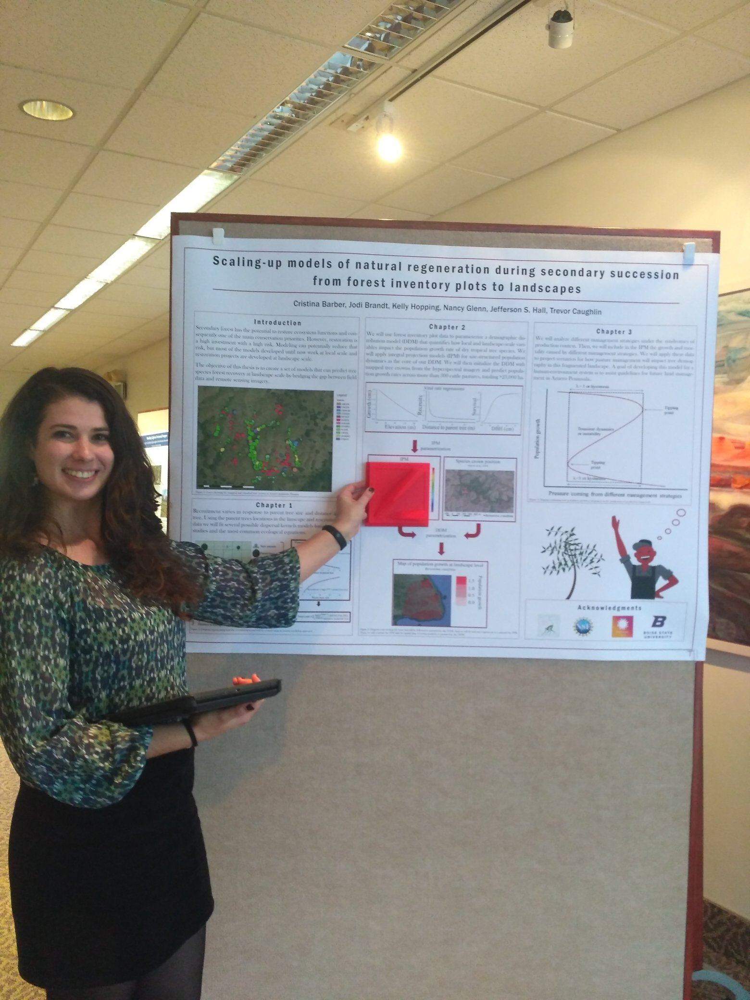

Oral presentations and posters
| 2021 |
Ph.D. dissertation defense
Dissertation title: Upscaling tree demography to heterogeneous landscapes using models and remote sensing. 
Committee memebers. Upper left corner: Dr. Kelly Hopping, lower left corner: Dr.Jodi Brandt, lower right corner: Dr. Pedro Brancalion, left on the front of the picture: Dr. Trevor Caughlin |
||||
| 2020 |
Presentation at the StanCon
The StanCon is a global event about innovative uses of Stan for Bayesian modeling Presentation title: Spatial models for plant neighborhood dynamics in Stan. Presentation at ISEC Presentation title: A Bayesian framework to link remote sensing and field data to predict natural regeneration at the landscape scale. Invited speaker and poster presenter at the GEM3 2020 Annual conference Presentation title: Communicating Science in Spanish to Diverse Audiences. |
||||
| 2019 |
Presentation at the US-IALE 2019
Presentation title: Scaling-up restoration: Modelling recruitment from inventory data to thousands of hectares. |
||||
| 2018 | Thesis proposal defense presentation and poster
 | ||||
| 2017 | Poster at the Biology Department Graduate Student Symposium Presentation title: Scaling up population dynamics of tropical forest trees in a reforesting landscape. 
|
||||
Public engagement
SCIENTIA: Communicating STEM Research in Languages other than English. Team member and co-creator of the Spanish Translation GEM3, an initiative that seeks to increase diversity, equity, and inclusivity (DEI) in STEM by sharing research findings with a broader Spanish-speaking audience.
3 Minutes Thesis competition at Boise State 2020 - 3rd price.
Invited speaker at the Summer Research Community (SRC) Ten Talks Session 2020 at Boise State University. Presentation title: Predicting on behalf of cost-efficiency.